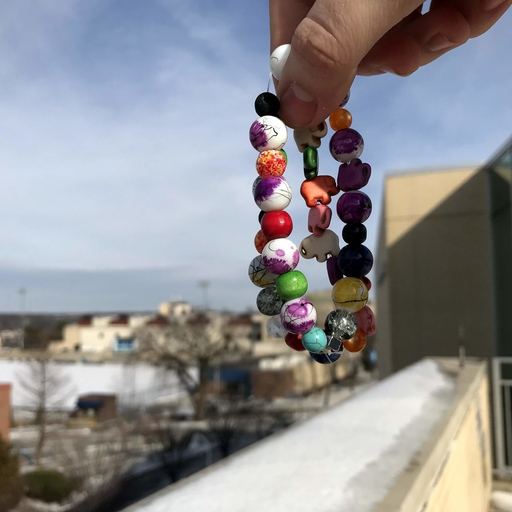
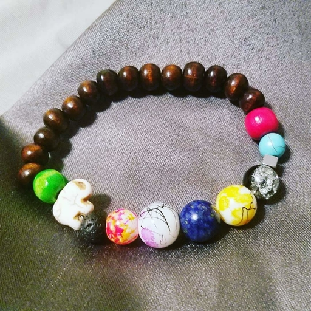
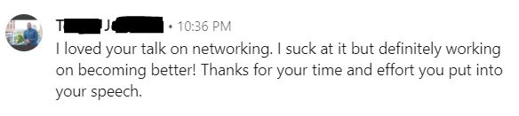
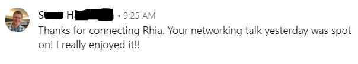
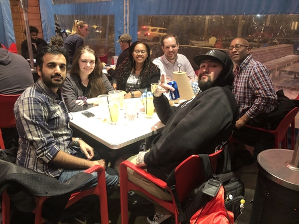

My First Conference Speaking Experience
by Rhia Dixon
Posted on February 27, 2019
 Photo Cred: Jay Whitsitt
Photo Cred: Jay Whitsitt
One of my goals for 2019 is to speak at 2-3 conferences. I am happy to report that I successfully completed my first conference speaking engagement on Saturday, February 9, 2019 at DevFest KC on the campus of the University of Missouri-Kansas City!
DevFest KC is a Google Developer Group event hosted by GDGKC. The conference featured local and national speakers talking and teaching about everything from flutter to serverless to machine learning. I had two people-focused sessions instead of technical, and that’s cool because these things apply to all people.
shaking the nerves
First...let’s start with how NERVOUS I was going into this event! Some nerves are good right? My level of nervousness though...whew! Mind you, I’m not new to public speaking...I’m just used to a much smaller scale with a tween to teenage audience. This was my first ever tech conference talk, and that pesky impostor syndrome was trying to work a number on me. I was so shook...I asked my Twitter peeps for suggestions to calm down, and them being the awesome folks they are?? They gave me ALL the suggestions! Here are a couple I plan to reuse for future nerve-shaking:
My guy, Eric Poe (Curriculum Director for CoderDojoKC) is always so very supportive, and this tweet from Adnan really spoke to me. I will forever go into my speaking events with these in mind.
You have friends in the audience, some you haven't met yet. You are speaking to them. Look for the looks of interest & agreement. You are speaking to them. Those on their phones or laptops are probably texting your awesomeness. Ignore the nappers. They are present, but not there.
— Eric Poe (@eric_poe) February 9, 2019
Talk like you wished someone would talk to you 2 weeks ago.
— adnan(╯°□°)╯︵ ┻━┻ (@werzadnan) February 9, 2019
inclusive diversity talk
My first talk of the day was about diversity and inclusion. This interactive talk focused on the attendees having meaningful discussions with others regarding diversity, inclusion, tokenism, and equity. Each attendee selected a bead to represent themselves, and as they engaged with each other, they traded beads. By the end of the session, everyone had discussed what each of the terms meant and looked like, they determined ways that they can help promote the good and thwart the bad, and they constructed beautifully unique bracelets to serve as a memento of these conversations.
I received great feedback about the format and content of this talk. I'm glad that everyone who attended was so willing to have these discussions in an open, non-judgemental way. This particular tweet from an attendee made my whole day!
@TheFakeRiRi I know you were a first-time speaker at #DevFestKC, but you gave an awesome hands-on talk on the delicate subjects of diversity, inclusion, and equity. The bracelets were a very cool metaphor, and mine's going on my desk as a reminder. Thanks for being there!
— Kevin Wallace (@kev_inja) February 12, 2019
As I continue to do this talk, I plan to add a different bracelet to my collection as a way to remember these amazing people and awesome experiences! Here are bracelets from a couple of the attendees followed by my own:
Photo credit: Jamie Flores

professional networking talk
My second talk was about professional networking. By this time, we’d had lunch and I’d met several people, so I really did feel like I was talking to friends. I talked about the different degrees in a network, where to find these people, how to engage, and how to cultivate connections. During this session, I did way more talking than the previous one (note to self: WATER), but it was a whole lot of fun! My audience was engaged, they laughed at the right moments, they answered questions, and they asked me questions at the end. It was an amazing experience!
Here is some of the feedback I received from people who attended this talk. I'm pretty sure I made an audible squee when I read these for the first (and tenth) time.


Side note: Another truly awesome thing happened with this talk. I met Kyle Paul! I've been following him on Twitter, and I was really looking forward to meeting him. I ran into him in the hallway between sessions, and y'all... He is SO MFN COOL! Yeah...I totally fan-girled for a moment...smh. However, I am not even the LEAST bit ashamed. I really enjoyed talking to Kyle, and he told me he was coming to my networking talk, which he DID. He had the session right before mine, let me borrow his clicker-thingy upon noticing I didn't have one, got it all set up and everything, and he sat in the front row.
After the talk I mention, "I've really got to get one of these thingys."
Guess what?? He said: "Now you've got one of these thingys."
THANK YOU SO MUCH, KYLE! I left the conference with all the warm fuzzies in the world.
making connections
There were so many great moments. Yet another cool thing about this conference was that I met a Twitter friend in real life, just like Eric said I would, and his name is Will. Will just so happens to be a new mentor for CoderDojoKC (a free monthly event powered by KCWiT that teaches kids how to code and offers leadership opportunities to students who have achieved mastery). During the opening remarks, we finally met in person, and we had some time throughout the conference to chat about tech in KC. Will also attended both of my talks (so if you want an attendee perspective on how I did...ask him @willjohnsonio).
With this being the beginning of my tech conference speaking career, my mentor stressed to me the importance of meeting and connecting with other speakers. Being the social butterfly that I am, I hopped all over that. I met several great people during the conference and the speaker dinner afterward. Half of the speakers went to Joe’s Kansas City for barbecue...the other half of us didn’t want to freeze in line waiting to get in, so we ate at Taco Republic (we got the better end of the deal).
 Photo Cred: Chris DeMars
I’m looking forward to seeing Faisal Abid, Pierre DeBois, Jonathan Wondrusch, Rachael Ferguson, Chris DeMars and all of the other awesome speakers at more conferences or engaging on Twitter. I’m also super excited about doing my next conference! Check out my upcoming speaking engagements (and check back for updates). Hopefully, I’ll be in a city near you soon!
GDG DevFests are large, community-run developer events happening around the globe focused on community building and learning about Google’s technologies. Each DevFest is carefully crafted for you by your local GDG community to bring in awesome speakers, great topics, and lots fun! While no two events will be exactly alike, each GDG DevFest will, at its core, be powered by a shared belief that when developers come together to exchange ideas, amazing things can happen!
DevFest KC 2019 is a 100% community organized full-day developer conference featuring awesome world-class speakers from technology leaders within the community as well as Google product team developers.


about the blog
about the author
 Meet Rhia -- a pretty awesome, somewhat nerdy, super-friendly software engineer, wife, and mother of one...a lover of puzzles, sci-fi book series, the Skittles in the purple bag, and ALL things Harry Potter.
#TechIsLife #kcwomenintech #BlackTechTwitter
Meet Rhia -- a pretty awesome, somewhat nerdy, super-friendly software engineer, wife, and mother of one...a lover of puzzles, sci-fi book series, the Skittles in the purple bag, and ALL things Harry Potter.
#TechIsLife #kcwomenintech #BlackTechTwitter
Follow @TheFakeRiRi